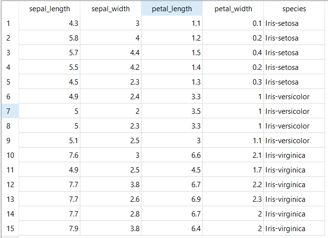

Eksplorasi Data IRIS#
Eksplorasi data merupakan langkah awal yang krusial dalam analisis data. Tahap ini bertujuan untuk memahami karakteristik, struktur, pola, dan kualitas dari suatu dataset sebelum melanjutkan ke pemodelan atau analisis yang lebih mendalam.
Melalui eksplorasi ini, kita dapat mengenali isi data secara menyeluruh untuk menentukan metode analisis yang paling sesuai. Dalam catatan ini, saya menggunakan studi kasus Dataset IRIS Flower.
Sumber Data: Download IRIS.csv
Persiapan Library#
Sebelum memulai analisis, kita perlu memastikan pustaka (library) yang dibutuhkan sudah terpasang:
%pip install pandas seaborn matplotlib
Pratinjau Dataset#
Dataset IRIS Flower terdiri dari 5 fitur dengan total 150 baris data. Berikut adalah tampilan data yang telah dimuat:
| sepal_length | sepal_width | petal_length | petal_width | species | |
|---|---|---|---|---|---|
| 1 | 5.1 | 3.5 | 1.4 | 0.2 | Iris-setosa |
| 2 | 4.9 | 3.0 | 1.4 | 0.2 | Iris-setosa |
| 3 | 4.7 | 3.2 | 1.3 | 0.2 | Iris-setosa |
| 4 | 4.6 | 3.1 | 1.5 | 0.2 | Iris-setosa |
| 5 | 5.0 | 3.6 | 1.4 | 0.2 | Iris-setosa |
| ... | ... | ... | ... | ... | ... |
| 146 | 6.7 | 3.0 | 5.2 | 2.3 | Iris-virginica |
| 147 | 6.3 | 2.5 | 5.0 | 1.9 | Iris-virginica |
| 148 | 6.5 | 3.0 | 5.2 | 2.0 | Iris-virginica |
| 149 | 6.2 | 3.4 | 5.4 | 2.3 | Iris-virginica |
| 150 | 5.9 | 3.0 | 5.1 | 1.8 | Iris-virginica |
150 rows × 5 columns
Dimensi Data#
Dimensi data memberitahu kita seberapa besar dataset yang sedang kita hadapi (Jumlah Baris vs Jumlah Kolom).
df.shape
(150, 5)
Struktur dan Tipe Data#
Kita perlu memastikan setiap kolom memiliki tipe data yang sesuai (misalnya: angka sebagai float, label sebagai object/string).
df.info()
<class 'pandas.core.frame.DataFrame'>
RangeIndex: 150 entries, 1 to 150
Data columns (total 5 columns):
# Column Non-Null Count Dtype
--- ------ -------------- -----
0 sepal_length 150 non-null float64
1 sepal_width 150 non-null float64
2 petal_length 150 non-null float64
3 petal_width 150 non-null float64
4 species 150 non-null object
dtypes: float64(4), object(1)
memory usage: 6.0+ KB
Sepal/Petal Length & Width: Berupa float64 (Desimal), sudah tepat untuk perhitungan statistik.
Species: Berupa object (Kategorikal), sebagai target klasifikasi.
Pengecekan Data Duplikat#
Data yang ganda dapat menyebabkan bias pada model.
df.duplicated().sum()
np.int64(3)
Pengecekan Missing Value (Data Kosong)#
Data yang kosong bisa merusak akurasi model. Kita harus memastikan setiap sel terisi.
df.isnull().sum()
sepal_length 0
sepal_width 0
petal_length 0
petal_width 0
species 0
dtype: int64
Analisis: Jika hasilnya 0 untuk semua kolom, berarti dataset IRIS ini sangat bersih dan tidak memerlukan tahap pengisian data kosong (imputation).
Deteksi Outlier (Pencilan Data)#
Untuk mendeteksi outlier kita menggunakan tools orange data mining, dengan langkah sebagai berikut:
Buka Orange Data Mining.
Pilih widget “File” untuk memuat dataset IRIS.csv.
Sambungkan widget “File” ke widget “Outliers”.
Lalu berikan 2 data table untuk melihat data yang dianggap outlier dan inlears.

Diatas adalah hasil dari deteksi outlier dengan menggunakan Orange data mining, dimana terdapat 15 data yang dianggap sebagai outlier, dan 135 data yang dianggap inlears. Namun, untuk dataset IRIS ini, kita tidak akan menghapus data outlier karena jumlahnya relatif kecil dan dapat memberikan informasi penting tentang variasi dalam data.
Ringkasan Statistik#
Untuk memahami sebaran angka pada setiap fitur numerik, berikut adalah ringkasan statistik deskriptif dari dataset tersebut:
| sepal_length | sepal_width | petal_length | petal_width | |
|---|---|---|---|---|
| count | 150.000000 | 150.000000 | 150.000000 | 150.000000 |
| mean | 5.843333 | 3.054000 | 3.758667 | 1.198667 |
| std | 0.828066 | 0.433594 | 1.764420 | 0.763161 |
| min | 4.300000 | 2.000000 | 1.000000 | 0.100000 |
| 25% | 5.100000 | 2.800000 | 1.600000 | 0.300000 |
| 50% | 5.800000 | 3.000000 | 4.350000 | 1.300000 |
| 75% | 6.400000 | 3.300000 | 5.100000 | 1.800000 |
| max | 7.900000 | 4.400000 | 6.900000 | 2.500000 |
Catatan: Gunakan tombol “Click to show” pada sel di atas jika ingin melihat kode Python yang digunakan untuk memproses tabel ini.
Kesimpulan Eksplorasi Data#
Berdasarkan seluruh tahapan eksplorasi data yang telah dilakukan, berikut adalah kesimpulan utamanya:
Kualitas dan Integritas Data:
Data Sangat Bersih: Tidak ditemukan adanya missing values (nilai kosong) pada seluruh fitur.
Dataset Seimbang (Balanced): Dataset memiliki distribusi kelas yang sempurna (masing-masing spesies memiliki 50 sampel).
Struktur dan Dimensi:
Dataset memiliki dimensi 150 baris dan 5 kolom.
Seluruh fitur numerik didefinisikan sebagai
floatdan target sebagaiobject.